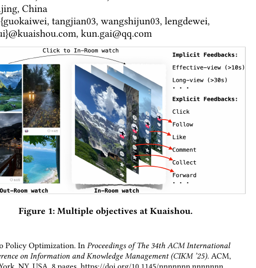
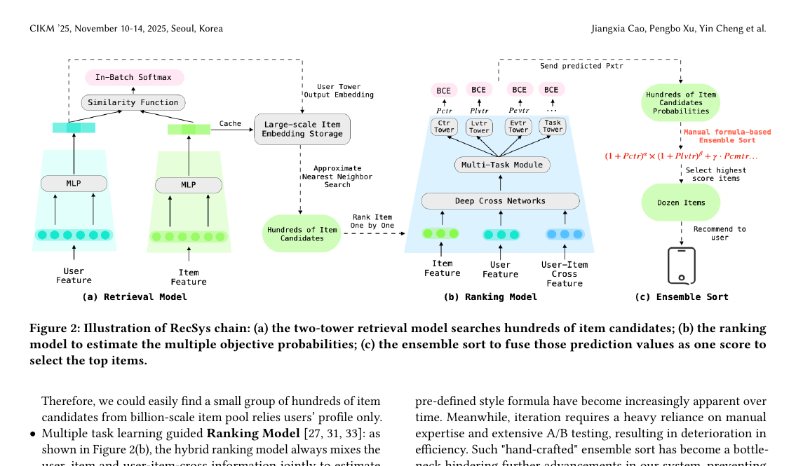
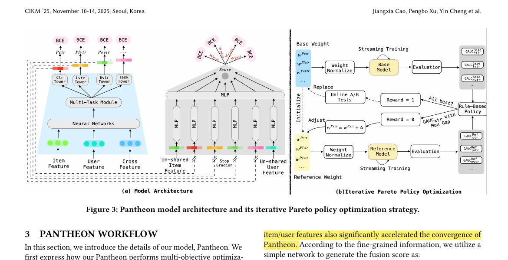
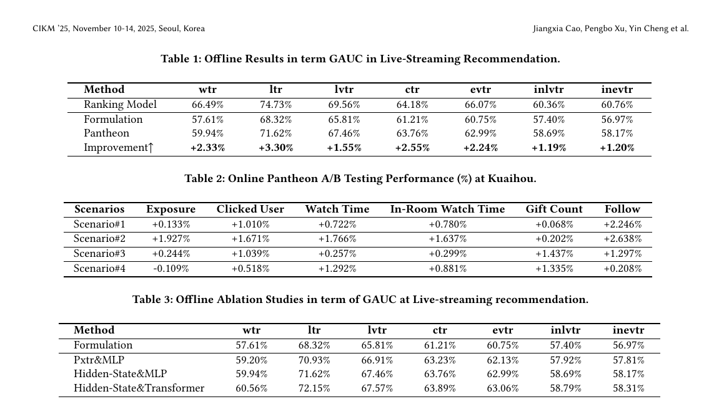

Pantheon
1. 基本信息
- 标题：Pantheon: Personalized Multi-objective Ensemble Sort via Iterative Pareto Policy Optimization
- 作者：Jiangxia Cao, Pengbo Xu, Yin Cheng, Kaiwei Guo, Jian Tang, Shijun Wang, Dewei Leng, Shuang Yang, Zhaojie Liu, Yanan Niu, Guorui Zhou, Kun Gai
- 机构：Kuaishou Technology
- 时间：2025
- 会议：CIKM 2025
- arXiv：https://arxiv.org/abs/2505.13894
- 关键词：Ensemble Sort、Multi-objective Optimization、Pareto、Live-streaming Recommendation、Joint Training
- pdf位置：
C:\Users\chaol\Desktop\推荐论文阅读\reward sys\Pantheon.pdf - 笔记位置：
论文笔记/精排/LTR与多目标融合/Pantheon.md - 分类：精排 / LTR与多目标融合
2. 相关论文
- EMER：同样是在工业推荐里把“多目标融合排序”从人工公式改成端到端模型，但路线不同。Pantheon 依赖 ranking hidden-state + 标量化多目标损失 + IPPO 调权；EMER 更强调 request-wise comparative modeling 和 offline-online 对齐。
- UnifiedRL：更早的工业 RL-MTF 路线，把 multi-task fusion 写成 session-level 强化学习调权问题，核心是“定制 exploration policy + 渐进训练 + 软化 OOD 约束”；Pantheon 则放弃 RL 调权，转向 hidden-state 继承和 Pareto 权重搜索的可学习融合器。
3. 一句话总结
Pantheon 想替代工业推荐里长期依赖人工经验调参的 ensemble sort 公式：它把融合排序做成 ranking 模型上的一个联合训练插件，直接吃多任务 tower 的 hidden-state 而不是只吃压缩后的 Pxtr，再用正权重标量化损失和 IPPO 迭代调权，自动逼近更好的 Pareto trade-off。
4. 论文在解决什么问题
4.1 为什么 ensemble sort 是工业推荐链路里最难自动化的一段
论文把工业 RecSys 拆成三段：
- Retrieval 先从超大 item 池里找几百个候选。
- Ranking 对每个候选逐个估多个目标概率，也就是一组
Pxtr。 - Ensemble sort 再把这些
Pxtr融成一个最终分数，选出最该曝光的少量 item。
真正难的是第 3 步。
因为它直接决定多目标之间怎么折中，比如点击、长看、站内停留、礼物、关注等。工业系统里这一步往往还是手写公式，靠一堆人工权重 α/β/γ/... 去调。论文认为它的问题不只是“麻烦”，而是：
- 权重强依赖专家经验和大量 A/B 试错；
- 公式再复杂，本质仍是预定义函数族，表达上限受限；
- 当某个目标涨了、另一个目标掉了时，很难系统地找到新的 Pareto 平衡点。
4.2 Figure 1：快手直播场景天然就是多目标系统

Figure 1 不是方法图，但它先把问题说清楚了：
- 用户既可能在 Out-Room 刷外部流，也可能点进 In-Room 深看；
- 正反馈不止一种，有隐式反馈
effective-view / long-view，也有显式反馈click / follow / like / comment / collect / forward。
这意味着最终排序目标不可能退化成“只优化一个分数”。
Pantheon 的核心动机其实就是：不要再手动猜这些反馈该如何组合，而是让模型自己从数据里学一个更稳的折中。
4.3 Figure 2：Pantheon 插在 ranking 之后，但不是简单替换公式

Figure 2 把链路关系画得很直白：
(a)Retrieval 先靠 user/item disentangled 表征找回几百个候选；(b)Ranking 用多任务结构分别输出Pctr / Plvtr / ...；(c)传统 ensemble sort 再把这些数值用公式揉成一个最终分数。
Pantheon 的目标不是否定 retrieval 或 ranking，而是把 (c) 从“公式层”抬成“模型层”。
也就是说，它仍然依附现有 ranking 系统，但不再只消费 Pxtr 这些最终概率，而是直接复用 ranking 内部更细粒度的表征。
5. 方法总览
5.1 Figure 3：Pantheon = 左边的融合打分插件 + 右边的 IPPO 调权闭环

Figure 3 分成两部分：
- 左图
(a)是模型结构。Pantheon 从多任务 ranking 模块里取各任务 tower 的 hidden-state，再拼上额外的 user/item 特征，经过一个Ensemble_Encoder输出最终Score。 - 右图
(b)是训练策略。它维护一个base model和一个reference model，通过规则化的“自博弈”过程不断调整多目标损失权重，尝试找到更优的 Pareto frontier。
论文真正的贡献不是单个 MLP，而是把“模型输入怎么设计”和“多目标权重怎么自动找”一起做了。
5.2 Fusion Score Generation：为什么要吃 hidden-state，而不是只吃 Pxtr
Pantheon 的输入不是几个压缩后的概率值，而是：
其中：
t^{xtr} ∈ R^d是 ranking 各任务 tower 输出的 hidden-state；ItemFea / UserFea ∈ R^d是 Pantheon 自己额外引入、且与 ranking 不共享的一组可学习特征；- 最后由
Ensemble_Encoder(P)输出Score ∈ (0,1)。
这一步最值得记的是两个设计点：
-
representation inheritance 论文认为
Pxtr只是 tower 表征经过最后一层预测头后的数值压缩，信息已经严重损失。
直接拿 hidden-state 做输入，相当于把“各目标为什么高/低”的上下文也带进融合层，而不是只看几个最终概率。 -
stop-gradient 这里不是普通的 joint training，而是“共享前向、隔离反向”。
Pantheon 要复用 ranking tower 的 hidden-state，但不希望 ensemble 分支的梯度反向改写 ranking 分支原本的多任务目标，因此对t^{xtr}做stop-gradient。
这个操作成立的前提是：Pantheon 把这些 tower hidden-state 当作固定特征源，而不是继续联动优化 ranking 头。
如果不做 stop-gradient，那么 scalarized fusion loss 会直接干预原本各 Pxtr 的训练，可能把 ranking 模块推向“更利于融合分数”的方向，而不是“更利于各单任务估计”的方向，导致两条支路互相污染。
5.3 额外 user/item 特征为什么重要
论文特别提到，Pantheon 还引入了一组不与 ranking 共享的 user/item 特征，并观察到它们会明显加速收敛。
我的理解是：
如果 Pantheon 完全只读 ranking hidden-state，它更像一个“后接的读出层”；加入不共享特征后，它才有能力学习一些 ranking 主干里没显式保留、但对最终融合权衡很重要的个性化偏置。
5.4 单一融合分数如何兼容多个目标
Pantheon 只输出一个标量 Score，但训练时会把多个目标的 BCE loss 加权求和：
这里最容易被忽略的不是公式本身，而是它后面的约束：
- 论文要求权重必须是正数；
- 只要所有
w_i > 0，标量化损失的局部最优点就是多目标问题的局部 Pareto 最优点； - 若把所有权重整体乘同一个正数
k，最优参数与输出分布不变，所以真正起作用的是权重比值w_i / w_j，不是绝对尺度。
这解释了两件事：
- 为什么论文一直在强调“relative positive weights”而不是绝对值；
- 为什么后面 IPPO 调的是各目标的相对权重结构，本质上是在移动 Pareto frontier 上的位置。
5.5 IPPO：它更像规则化 self-play，不是复杂 RL 算法
Pantheon 把调权过程写成 RL 视角：
State：当前各目标的正权重w^{xtr}Agent：当前可训练的 Pantheon 模型Environment：实时流式训练和评估日志Reward：reference model 是否在所有 GAUC 指标上同时压过 base modelAction：替换 base model，或给某个目标权重加一个小步长Δ=0.1/N
但要注意，它不是训练一个神经策略网络去输出动作。
论文实际落地的是rule-based policy：
- 若 reference model 在全部评估指标上都优于 base model，就直接替换 base model；
- 否则，找到 GAUC gap 最大的目标，把对应权重往上调一个小步长，再继续下一轮。
所以 IPPO 的本质不是“复杂 RL 算法”，而是借 RL 的状态-动作-奖励语言，把多目标调权过程写成一个自动搜索 Pareto frontier 的闭环。
它成立的关键前提有两个：
- 评估指标必须方向一致，才能判断“是否全都更好”；
- 权重更新步长要足够小，否则 reference model 可能在目标之间来回震荡，难以稳定收敛。
6. Score Distribution Discussion
论文单独拿一节讲 fusion score 的分布，这点很工业。
- 均值决定曝光量：score 均值越大，直播内容整体更容易被分发。
- 方差决定曝光位置：score 方差越大，直播内容越可能更早插到短视频流里。
因此作者在 A/B 前会做一个 mean-variance calibration，把实验组 Pantheon 的输出分布对齐到基线模型。
这一步很关键，因为否则线上差异可能来自“分数分布偏移”，而不是模型确实学到了更好的排序逻辑。
7. 实验与结果
7.1 设置
- 场景：快手直播推荐
- 规模：超过 4 亿用户，数十亿曝光日志
- 离线指标：wide-used
GAUC - 线上主要指标：Clicked User、Watch Time、Gift Count，以及 Exposure
这说明 Pantheon 不是小规模离线实验，而是直接替换线上多年使用的 formula-based ensemble sort。
7.2 Table 1 + Table 2 + Table 3：主结果、线上收益和消融都支持作者主张

先看离线主结果 Table 1。
相对旧公式，Pantheon 在所有目标上都涨，论文总结平均提升约 +1.62%。几个代表值：
wtr：57.61% -> 59.94%，提升+2.33%ltr：68.32% -> 71.62%，提升+3.30%ctr：61.21% -> 63.76%，提升+2.55%evtr：60.75% -> 62.99%，提升+2.24%
这说明它至少没有因为“统一成一个融合分数”而丢掉原来多目标结构里的主要信息。
再看线上 Table 2。
作者强调在他们系统里，0.1% 的 clicked user 提升都已显著，而 Pantheon 在 4 个 scenario 上分别做到：
Clicked User：+1.010% / +1.671% / +1.039% / +0.518%Watch Time：+0.722% / +1.766% / +0.257% / +1.292%Follow：+2.246% / +2.638% / +1.297% / +0.208%
这组结果支撑了论文最核心的工程 claim：
Pantheon 不是“离线指标更好看”，而是真的能替换线上公式并带来稳定收益。
最后看 Table 3 的消融，论文验证了三层结论：
Pxtr&MLP已经比旧公式好 例如wtr: 57.61% -> 59.20%。这说明 IPPO + 可学习融合器本身就有价值。Hidden-State&MLP继续变好 例如ltr: 70.93% -> 71.62%。这说明 hidden-state 确实比压缩后的 Pxtr 含有更多可供融合利用的信息。Hidden-State&Transformer最好 例如wtr: 59.94% -> 60.56%，ltr: 71.62% -> 72.15%。这说明更强的 ensemble encoder 仍能继续挖出收益。
需要注意的是，Figure 3(a) 主图里实际画的是 MLP 版 Pantheon；Transformer 出现在消融增强版里。
所以论文的“最终最好结果”来自更强 encoder，但整篇 paper 的主叙事仍然是 hidden-state 继承 + IPPO 调权。
7.3 Ecology 结果：Pantheon 不是简单把流量往头部目标上堆
Table 4 和 Table 5 没有像主表那样显眼，但很重要。
从 Table 4 看：
- 对偏
In-Room的高活跃用户，曝光下降-2.2%，但In-Room Eff-View反而提升+3.5% - 对
Out-Room的中活跃用户，曝光提升+6.4%，对应Eff-View提升+12.9%
作者据此认为，Pantheon 把部分流量从高价值头部人群释放出来，分发给更广泛用户，同时没有牺牲体验，反而改善了有效观看质量。
Table 5 从行为模式上进一步说明它不是只偏向单一目标：
Long-View：+10.84%Interaction：+9.13%Gift：+1.87%Long&Inter：+5.32%
我的理解是：
IPPO 并不是把某个最强目标硬拉上去，而是在“多个目标不能互相明显伤害”的约束下找到更稳的流量分配方式。
7.4 Objective Dependence：Pantheon 维持了原有重要性排序，但更平衡
论文用 Kendall’s τ 分析融合分数与各 Pxtr 的相关性。结论不是“Pantheon 完全摆脱了原有 Pxtr”，而是：
- 它仍维持了与旧公式近似一致的目标重要性顺序；
- 但绝对相关强度更平滑，不会过度被头部目标牵着走。
这与前面的 hidden-state 设计是一致的。
因为输入不再只有几个最终概率值，Pantheon 可以在更丰富的表征空间里做折中，从而减少 top objective 的数值抖动对最终排序的放大效应。
8. 理解、启发与局限
8.1 这篇论文最值钱的地方
我觉得 Pantheon 最有价值的不是“把公式换成 MLP”，而是它给了一套工业上可执行的替换路径：
- 不推翻原有 ranking，而是在其上做 plugin；
- 不直接吃
Pxtr，而是继承 hidden-state； - 不靠人工权重调参，而是把调权闭环自动化。
这三步合在一起，才让“公式融合”真正变成“模型融合”。
8.2 容易忽略的隐含条件
- Ranking tower 的 hidden-state 必须本身足够稳定、信息量足够大，否则 inheritance 没有意义。
stop-gradient依赖清晰的模块边界；如果工程上 Pantheon 与 ranking 深度耦合，梯度隔离就不容易维持。- IPPO 默认各目标都能被同一套离线评估指标稳定比较，否则“all best?” 这个判断会不可靠。
- mean-variance calibration 很关键，否则线上 A/B 可能混入分布偏移偏差。
8.3 这篇论文没有彻底回答的问题
- 它把调权过程写成 RL，但真实策略仍是规则化更新，泛化能力和样本效率没有被展开分析。
- 主文没有细讲为什么某些场景下 exposure 与体验可以同时提升，更多像经验观察。
- 最强结果来自 Transformer encoder，但论文没有继续拆解“强在哪一类交互结构”。
9. 结论与记忆点
Pantheon 可以记成一句话：
在工业推荐里，把多目标融合排序从“人工公式调权”升级成“hidden-state 继承 + 单分数联合训练 + Pareto 调权搜索”的插件式模型。
如果以后再看同类论文，可以优先问它三件事：
- 它融合时吃的是最终概率，还是更细粒度表征？
- 它多目标权重是人工定的，还是会自动搜索 Pareto trade-off？
- 它有没有控制 score distribution 带来的线上偏差？
- 本文通过控制权重来引导模型优化方向，进行得到帕累托更优的点，能否通过过滤数据或者其他方式得到？
Pantheon 给这三问都提供了比较完整的工业答案，这也是它最值得记住的地方。